January 12, 2011
(Next Release on January 20, 2011)
The Short-Term Outlook for Non-OPEC Supply Growth
On January 11, the Energy Information Administration (EIA) released its latest Short-Term Energy Outlook (STEO), which includes the first STEO forecast for 2012. EIA expects a continued tightening of world oil markets over the next two years. World oil consumption grows by an average of 1.5 million barrels per day (bbl/d) each year while the growth in supply from non-Organization of the Petroleum Exporting Countries (non-OPEC) countries averages less than 0.1 million bbl/d. Consequently, EIA expects the market will rely on both inventories and significant increases in production of crude oil and non-crude liquids by OPEC to meet world demand growth.
The total volume of non-OPEC oil production growth is one significant contributor to the uncertainty surrounding the outlook for oil prices as discussed in the STEO (see Energy Price Volatility and Forecast Uncertainty). This edition of This Week In Petroleum discusses the view of non-OPEC production underlying EIA’s latest STEO 2011 and 2012 projections.
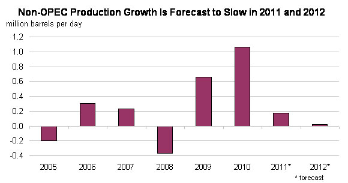
Leading projected increases in non-OPEC oil production are China, Brazil, and Canada, each of which EIA expects to show average production growth of 120,000 to 150,000 bbl/d from 2010 to 2012. EIA also projects production increases averaging 50,000 to 80,000 bbl/d each year in Colombia, Vietnam, and Kazakhstan over the next two years. Ghana became a new non-OPEC oil producer with the startup of the Jubilee field in December 2010. Production from the Jubilee field is expected to reach maximum production of 120,000 bbl/d by 2012; additional developments are underway.
In contrast, EIA expects that Russia’s oil production will fall by about 40,000 bbl/d in 2011, and decline by an additional 230,000 bbl/d in 2012. While Russia has improved its infrastructure, which hampered oil sector development during the previous decade, the country’s tax structure continues to impede upstream investment. The Russian government has indicated that a new tax structure is forthcoming. Should the planned tax reforms be implemented before the end of the forecast period, EIA is likely to raise its forecast for Russian oil production.
Other non-OPEC liquid fuels production is also expected to decline. EIA forecasts the largest declines to occur in the North Sea with annual average production falling by 180,000 bbl/d in 2011 and by an additional 160,000 bbl/d in 2012, as the discovery and development of new reserves have not kept pace with the maturation and declining production from existing fields. The latest STEO also projects that Mexico’s production will fall by about 200,000 bbl/d in 2011 and then by 80,000 bbl/d in 2012.
U.S. crude oil production, which increased by 150,000 bbl/d in 2010 to 5.51 million bbl/d, declines by 20,000 bbl/d in 2011. The 2011 forecast includes production declines of 50,000 bbl/d in Alaska and 220,000 bbl/d in the Federal Gulf of Mexico (GOM), which are almost offset by a projected 250,000-bbl/d increase in lower-48 non-GOM production. EIA also expects that fuel ethanol production will increase by 50,000 bbl/d (6 percent) in 2011.
Retail Prices Continue to Rise
The U.S. average retail price for a gallon of gasoline increased for the sixth straight week, advancing almost two cents versus last week to $3.09 per gallon, $0.34 per gallon higher than last year at this time. Prices on the West Coast jumped two and a half cents, the largest increase in the country, followed by the Midwest, where prices were a full two cents higher. East Coast gasoline prices rose almost two cents, while the Gulf Coast and Rocky Mountains saw prices increase over a penny. Prices on the West Coast were highest in the country at $3.26 per gallon, while prices in the Rocky Mountains were the lowest at $2.86 per gallon.
Diesel prices also advanced for the sixth successive week, with the national average retail diesel price relatively unchanged to remain at $3.33 per gallon, $0.45 higher than last year at this time. In a very quiet week for diesel, all of the regions except the Midwest saw small increases of less than a penny. Diesel prices in the Midwest moved in the opposite direction, registering a slight decrease.
Residential Heating Fuel Prices Rise
Residential heating oil prices continued to rise during the period ending January 10, 2011. The average residential heating oil price increased to about $3.36 per gallon, $0.02 per gallon over last week and $0.37 per gallon higher than the same time last year. Wholesale heating oil prices decreased by nearly $0.04 per gallon last week, reaching a price just shy of $2.61 per gallon. This is $0.32 per gallon higher than last year’s price.
The average residential propane price increased by nearly $0.02 per gallon to reach $2.76 per gallon. This was an increase of almost $0.10 per gallon compared to the $2.66 per gallon average from the same period last year. Wholesale propane prices continued to remain just shy of $1.42 per gallon. This was a decrease of almost $0.15 per gallon compared to the January 11, 2010 price of $1.57 per gallon.
Inventories of Propane Draw Down Again
Total U. S. inventories of propane took another drop last week, of 2.0 million barrels, to end at 50.6 million barrels. Despite six consecutive weeks of stock withdrawals, U.S. propane stocks remained within the average range, although the level moved close to the lower limit of the average range for this time of year. Most of the decline was realized in the Gulf Coast region, with a large drop of 1.7 million barrels of propane inventory. The East Coast regional stocks drew 0.5 million barrels. The Midwest region added 0.1 million barrels of propane inventory and the Rocky Mountain/West Coast regional stocks were up slightly. Propylene non-fuel use inventories represented 4.7 percent of total propane inventories.
Text from the previous editions of This Week In Petroleum is accessible through a link at the top right-hand corner of this page.
| Retail Prices (Dollars per Gallon) | |||||||
| 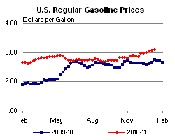 | 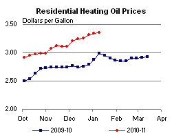 | ||||||
| 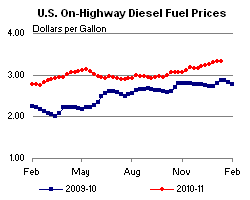 | 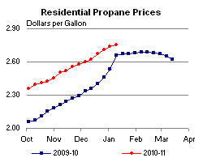 | ||||||
| Retail Data | Changes From | Retail Data | Changes From | ||||
| 01/10/11 | Week | Year | 01/10/11 | Week | Year | ||
| Gasoline | 3.089 | Heating Oil | 3.355 | ||||
| Diesel Fuel | 3.333 | Propane | 2.756 | ||||
| Futures Prices (Dollars per Gallon*) | |||||||||||||||||||||||||||
| 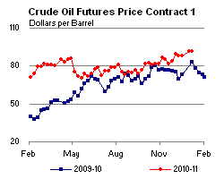 | 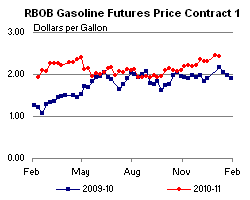 | ||||||||||||||||||||||||||
|
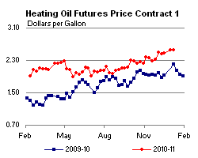 | ||||||||||||||||||||||||||
| *Note: Crude Oil Price in Dollars per Barrel. | |||||||||||||||||||||||||||
| Stocks (Million Barrels) | |||||||
| 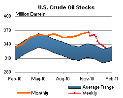 | 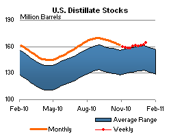 | ||||||
| 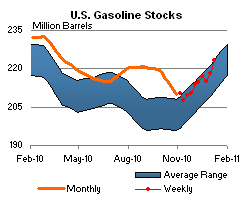 | 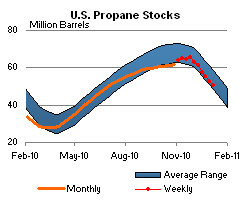 | ||||||
| Stocks Data | Changes From | Stocks Data | Changes From | ||||
| 01/07/11 | Week | Year | 01/07/11 | Week | Year | ||
| Crude Oil | 333.1 | Distillate | 164.8 | ||||
| Gasoline | 223.2 | Propane | 50.550 | ||||